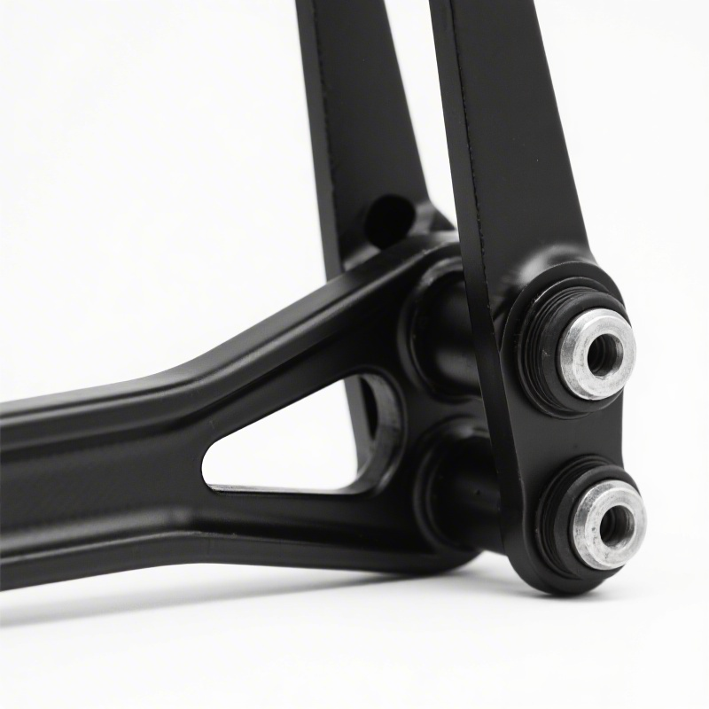
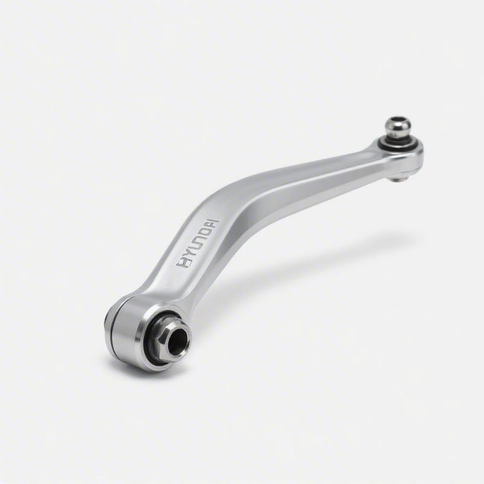
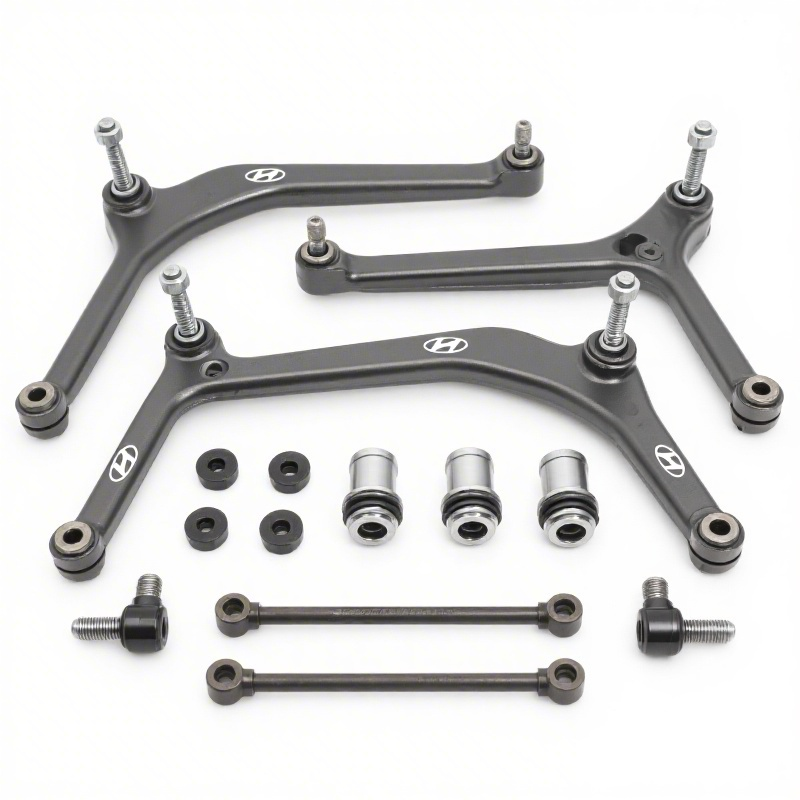
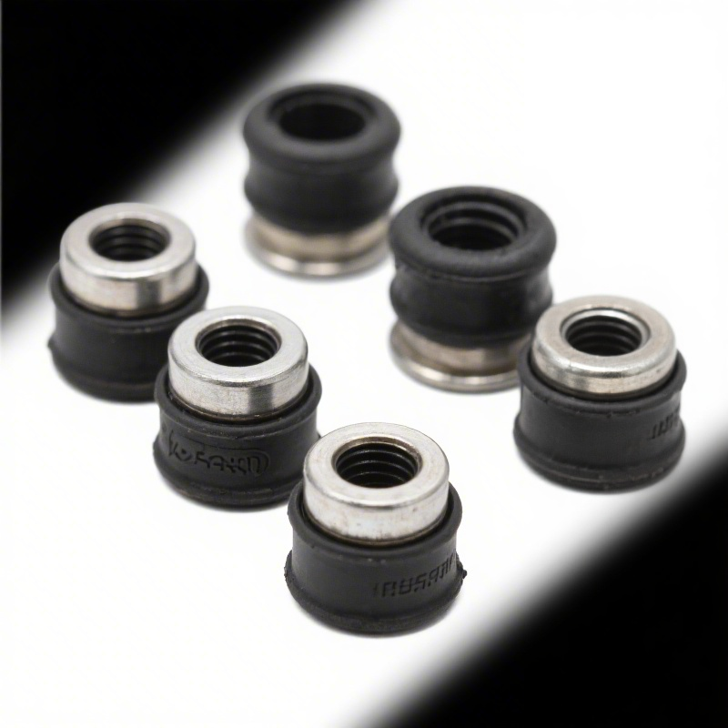
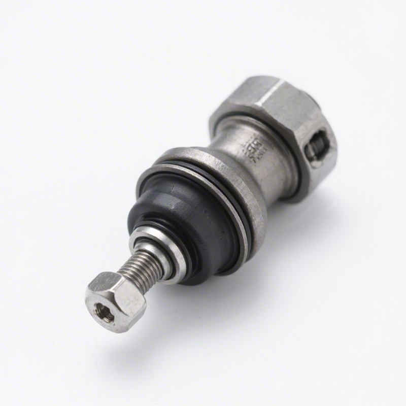

Rear lower control arm Hyundai Sonata YF/LF, Kia K5/Optima TF/JF. OEM 55270-3S000. Stamped steel ≥500MPa, factory bushing. B2B MOQ 20pcs.

| Part Type | Rear Lower Control Arm (L/R) |
|---|---|
| Material | Stamped Steel ≥500 MPa |
| Surface | Zinc Phosphate + Powder Coat |
| Bushing | Natural rubber, factory-pressed |
| OEM Ref | 55270-3S000 / 55271-2T000 |
| Weight | ~2.1 kg |
| MOQ | 20 pcs/SKU |
| Certification | IATF 16949 |
| Warranty | 12 months |
Kingmay Auto Parts (Guangzhou) supplies this OEM-grade chassis component primarily for Hyundai and Kia vehicles — collectively over 10 million units in service across Southeast Asia, the Middle East, Africa, and Latin America. This is a high-demand aftermarket SKU for regional distributors and trading companies.
| Vehicle | Generation | Year | OEM Number |
|---|---|---|---|
| Hyundai Sonata | YF 6th gen | 2010–2014 | 55270-3S000 / 55275-3S000 |
| Hyundai Sonata | LF 7th gen | 2015–2019 | 55271-C2AA0 / 55276-C2AA0 |
| Kia K5/Optima | TF 2nd gen | 2011–2015 | 55271-2T000 / 55276-2T000 |
| Kia K5/Optima | JF 3rd gen | 2016–2020 | 55271-D4AA0 / 55276-D4AA0 |
| Material | Stamped Steel ≥500 MPa |
| Surface | Zinc Phosphate + Powder Coat |
| Bushing | Natural rubber, factory-pressed |
| Weight | ~2.1 kg/pc |
| MOQ | 20 pcs/SKU |
| Certification | IATF 16949 |
| Warranty | 12 months |
Kingmay is the dedicated auto parts subsidiary of Globalucar Group, shipping from Nansha Port, Guangzhou to 50+ countries. All products are IATF 16949 / ISO certified. OEM documentation, custom packaging, and mixed-SKU container orders are available.



